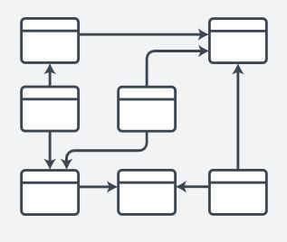

Introducción al curso de modelado de datos
Un modelo de base de datos muestra la estructura lógica de la base, incluidas las relaciones y limitaciones que determinan cómo se almacenan los datos y cómo se accede a ellos. Los modelos de bases de datos individuales se diseñan en base a las reglas y los conceptos de cualquier modelo de datos más amplio que los diseñadores adopten. La mayoría de los modelos de datos se pueden representar por medio de un diagrama de base de datos acompañante.
La estructura óptima depende de la natural organización de los datos de la aplicación y de los requisitos de ésta, que incluyen ritmo de transacciones, fiabilidad, mantenibilidad, escalabilidad y coste. La mayor parte de los sistemas de gestión de bases de datos están construidos sobre un modelo de datos concreto, aunque es posible que soporten más de uno.
